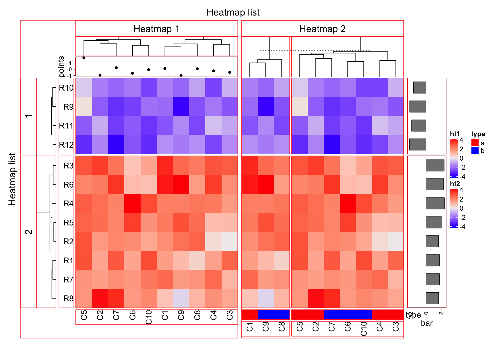

Chapter 5 Heatmap decoration
Each component of the heatmap/heatmap list has a name (unique id). You can go to any viewport to add graphics in by specifying the heatmap/annotation name.
First generate a figure that almost contains all types of heatmap components.
mat = matrix(rnorm(80, 2), 8, 10)
mat = rbind(mat, matrix(rnorm(40, -2), 4, 10))
rownames(mat) = paste0("R", 1:12)
colnames(mat) = paste0("C", 1:10)
ha_column1 = HeatmapAnnotation(points = anno_points(rnorm(10)))
ht1 = Heatmap(mat, name = "ht1", km = 2, column_title = "Heatmap 1",
top_annotation = ha_column1, row_names_side = "left")
ha_column2 = HeatmapAnnotation(type = c(rep("a", 5), rep("b", 5)),
col = list(type = c("a" = "red", "b" = "blue")))
ht2 = Heatmap(mat, name = "ht2", row_title = "Heatmap 2", column_title = "Heatmap 2",
bottom_annotation = ha_column2, column_km = 2)
ht_list = ht1 + ht2 + rowAnnotation(bar = anno_barplot(rowMeans(mat), width = unit(2, "cm")))
draw(ht_list, row_title = "Heatmap list", column_title = "Heatmap list")
ComplexHeatmap:::list_component()## [1] "ROOT"The components (viewports) that have names are:
global: the viewport which contains the whole figure.global_column_title: the viewport which contains column title for the heatmap list.global_row_title: the viewport which contains row title for the heatmap list.main_heatmap_list: the viewport which contains a list of heatmaps and row annotations.heatmap_@{heatmap_name}: the viewport which contains a single heatmapannotation_@{annotation_name}: the viewport which contains an annotation on columns.annotation_@{annotation_name}_@{i}: for row annotations@{heatmap_name}_heatmap_body_@{i}: the heatmap body.@{heatmap_name}_column_title: column title for a single heatmap.@{heatmap_name}_row_title_@{i}: since a heatmap body may be splitted into several parts.@{i}is the index of the row slice.@{heatmap_name}_dend_row_@{i}: dendrogram for ith row slice.@{heatmap_name}_dend_column: dendrogram on columns@{heatmap_name}_row_names_@{i}: the viewport which contains row names.@{heatmap_name}_column_names: the viewport which contains column names.heatmap_legend: the viewport which contains all heatmap legends.legend_@{heatmap_name}: the viewport which contains a single heatmap legend.annotation_legend: the viewport which contains all annotation legends.legend_@{annotation_name}: the viewport which contains a single annotation legend.
5.1 decorate_* functions
Basically, you can go to these components by seekViewport(), but to hide the details that is too low-level, ComplexHeatmap package provides decorate_* family functions which makes it easy to add graphics into different components.
Following code add annotation names, mark one grid in the heatmap and seperate the first column clusters with two rectangles.
ht_list = draw(ht_list, row_title = "Heatmap list", column_title = "Heatmap list",
heatmap_legend_side = "right", annotation_legend_side = "left")
decorate_heatmap_body("ht1", {
grid.text("outlier", 1.5/10, 2.5/4, default.units = "npc")
grid.lines(c(0.5, 0.5), c(0, 1), gp = gpar(lty = 2, lwd = 2))
}, slice = 2)
decorate_column_dend("ht1", {
tree = column_dend(ht_list)$ht1[[1]]
ind = cutree(as.hclust(tree), k = 2)[order.dendrogram(tree)]
first_index = function(l) which(l)[1]
last_index = function(l) { x = which(l); x[length(x)] }
x1 = c(first_index(ind == 1), first_index(ind == 2)) - 1
x2 = c(last_index(ind == 1), last_index(ind == 2))
grid.rect(x = x1/length(ind), width = (x2 - x1)/length(ind), just = "left",
default.units = "npc", gp = gpar(fill = c("#FF000040", "#00FF0040"), col = NA))
})
decorate_row_names("ht1", {
grid.rect(gp = gpar(fill = "#FF000040"))
}, slice = 2)
decorate_row_title("ht1", {
grid.rect(gp = gpar(fill = "#00FF0040"))
}, slice = 1)
decorate_annotation("points", {
grid.lines(c(0, 1), unit(c(0, 0), "native"), gp = gpar(col = "red"))
})
For annotations which are created by anno_points(), anno_barplot() and anno_boxplot(), “native” unit can be used in the decoration code.
5.2 Examples
5.2.1 Barplot for single column heatmap
le = c(sample(letters[1:3], 400, prob = c(7, 2, 1), replace = TRUE),
sample(letters[1:3], 600, prob = c(2, 3, 5), replace = TRUE))
col = c("a" = "red", "b" = "green", "c" = "blue")
split = c(rep("group1", 400), rep("group2", 600))
ht = Heatmap(le, name = "letters", col = col, width = unit(3, "cm"),
top_annotation = HeatmapAnnotation(barplot = anno_empty(height = unit(4, "cm"))))
ht = draw(ht, split = split)## Since all heatmaps/annotations have absolute units, the total width of the plot is 56mmro = row_order(ht)
lt = lapply(ro, function(index) {
t = table(le[index])
t/sum(t)
})
decorate_annotation("barplot", {
pushViewport(viewport(xscale = c(0.5, 2.5), yscale = c(0, 1)))
grid.rect(x = 1, y = cumsum(lt[[1]]), width = 0.8, height = lt[[1]], just = "top",
gp = gpar(fill = col), default.units = "native")
grid.rect(x = 2, y = cumsum(lt[[2]]), width = 0.8, height = lt[[2]], just = "top",
gp = gpar(fill = col), default.units = "native")
grid.yaxis()
grid.text("Relative proportion", x = unit(-1.5, "cm"),rot = 90, just = "bottom")
popViewport()
})
5.2.2 add decoration for a customized heatmap
customized_heatmap = function(m, ...) {
post_fun = function(ht) {
m = ht@matrix
co = column_order(ht)
cm = colMeans(m)[co]
nc = ncol(m)
ind = which(cm < 0)
if(length(ind)) {
decorate_heatmap_body(ht@name, {
grid.rect((ind - 1)/nc, 0.5, 1/nc, 1, gp = gpar(col = "black", lwd = 2, fill = NA),
just = "left")
})
}
}
x = colMeans(m)
Heatmap(m, ...,
top_annotation = HeatmapAnnotation(mean = anno_barplot(x, gp = gpar(fill = ifelse(x > 0, "red", "green")), width = unit(4, "cm"))),
post_fun = post_fun)
}
m1 = matrix(rnorm(100), nr = 10)
m2 = matrix(rnorm(100), nr = 10)
customized_heatmap(m1) %v% customized_heatmap(m2)